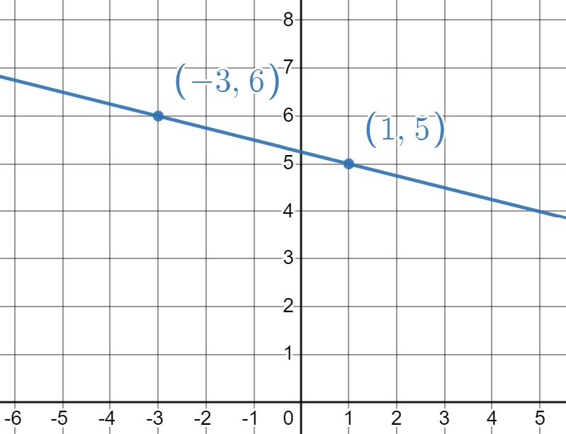
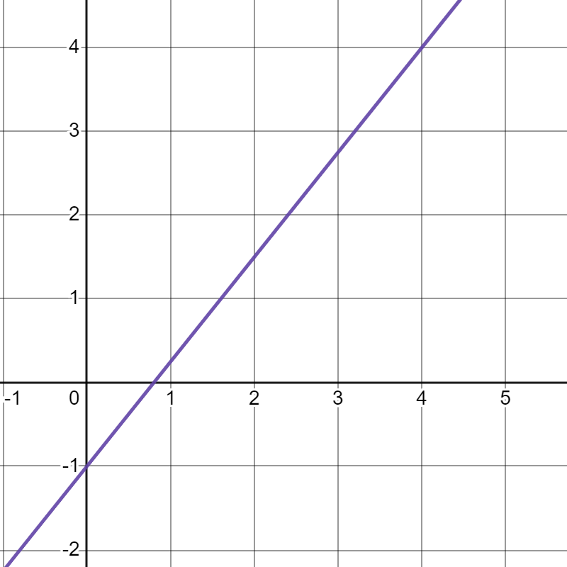
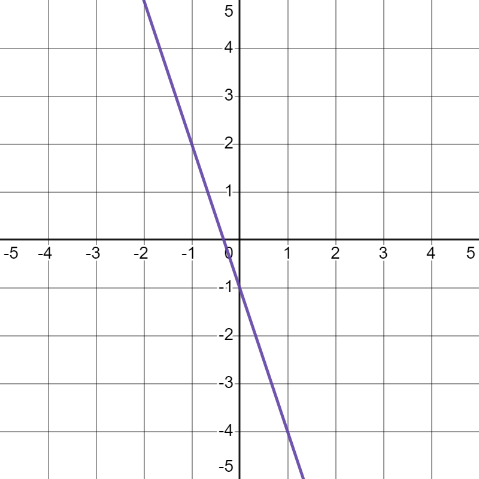
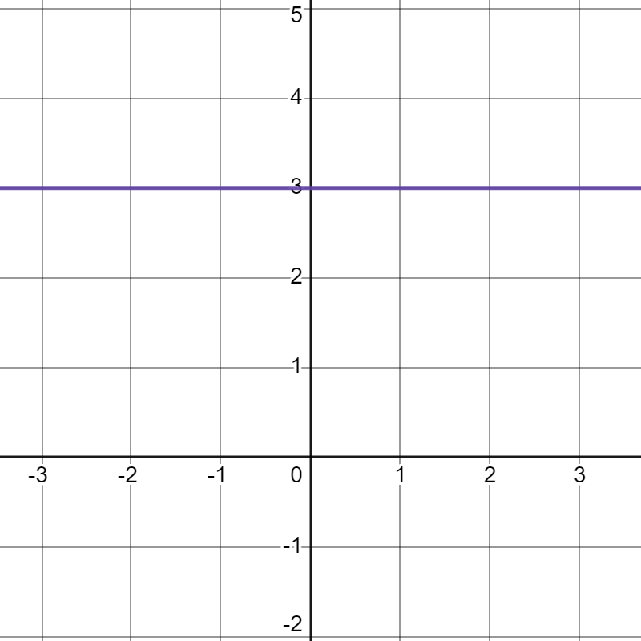

Section 2 B. Lines and Solving Linear Equations
Subsection 2.1 Lines
Supplements XYZ Sections: All
Subsubsection 2.1.1 Slope
Example 2.1.1.
The slope of a line measures the rate of change of the line (rise over run). Given two points on a line \((x_1,y_1)\) and \((x_2,y_2)\text{,}\) we can calculate the slope using the following:
\begin{equation*}
m = \dfrac{y_2-y_1}{x_2-x_1}
\end{equation*}
Find the slope of the line that goes through the points \((-3,6)\) and \((1,5)\text{.}\)
We can also find the slope of a line from its graph.

Example 2.1.2.
Find the slope of the line that goes through the points \((-2,5)\) and \((1,7)\text{.}\)
Example 2.1.3.
What is the slope of the line graphed below?

Subsubsection 2.1.2 Slope-Intercept Form
Example 2.1.4.
The equation of a line in slope-intercept form is:
\begin{equation*}
y = mx+b
\end{equation*}
where \(m\) is the slope and \(b\) is \(y-\)intercept
Identify the slope and \(y-\)intercept for \(y = 2x+5\text{.}\) Sketch the graph of \(y\text{.}\) Is the graph of \(y\) an increasing, decreasing, or horizontal line?
The slope of an increasing line is positive
The slope of a decreasing line is negatitve
The slope of a horizontal line is zero
The slope of a vertical line is undefined
Solution.
The slope is 2 and the \(y-\)intercept is \((0,5)\text{.}\) The graph is an increasing line:
Example 2.1.5.
Identify the slope and \(y-\)intercept of \(f(x) =-3x-1\text{.}\) Sketch the graph of \(f(x)\text{.}\) Is the graph of \(f(x)\) an increasing, decreasing, or horizontal line?
Solution.
The slope is \(-3\) and the \(y-\)intercept is \((0,-1)\text{.}\) The graph is a decreasing line:

Example 2.1.6.
Identify the slope and \(y-\)intercept of \(y=3\text{.}\) Sketch the graph of \(y\text{.}\) Is \(y\) an increasing, decreasing, or horizontal line?
Solution.
The slope is 0 and the \(y-\)intercept is \((0,3)\text{.}\) The graph is a horizontal line:

Subsubsection 2.1.3 Finding an Equation of a Line in Slope-Intercept Form
Example 2.1.7.
Find the equation of the line that passes through the points \((-7,2)\) and \((5,8)\) in slope-intercept form.
Example 2.1.8.
Find the equation of the line that passes through the points \((-1,10)\) and \((2,8)\) in slope-intercept form.
Solution.\(y = -\dfrac{2}{3}x + \dfrac{28}{3}\)
Example 2.1.9.
Find the equation of the line that passes through the points \((-2,5)\) and \((7,5)\) in slope-intercept form.
Subsubsection 2.1.4 Point-Slope Form
Example 2.1.10.
The equation of a line in point-slope form is:
\begin{equation*}
y = m(x-x_1)+y_1
\end{equation*}
where \(m\) is the slope and \((x_1,y_1)\) is any point on the line.
Identify the slope of \(y=3(x-4)-7\text{.}\) What point on \(y\) can we identify without any calculation? Rewrite \(y\) in slope-intercept form and identify the \(y-\)intercept
Solution.The slope is 3, and the point is \((4,-7)\text{.}\) In slope intercept form, the line is \(y=3x-19\) and the \(y-\)intercept is \((0,-19)\)
Example 2.1.11.
For \(y=2(x+1)+5\text{,}\) (a) identify the slope, (b) identify a point on \(y\) without doing any calculations, and (c) rewrite \(y\) in slope-intercept form
Solution.
2
\(\displaystyle (-1,5)\)
\(\displaystyle y=2x+7\)
Example 2.1.12.
Find the equation of the line with slope \(-\dfrac{1}{3}\) that passes through the point \(\lrpar{3,\dfrac{5}{2}}\) in point-slope form.
Solution.\(y=-\dfrac{1}{3}(x-3)+\dfrac{5}{2}\)
Subsection 2.2 Solving Linear Equations
Example 2.2.1.
Solve the following linear equations for \(x\)
\(\displaystyle 3.2x+3.6=-9.18\)
\(\displaystyle \dfrac{x+1}{3} = 10\)
\(\displaystyle \dfrac{7}{3}x-\dfrac{1}{2}=1\)
\(\displaystyle 2x+\sqrt{3} = 0\)
Solution.
\(\displaystyle x = -3.99375\)
\(\displaystyle x = 29\)
\(\displaystyle x = \dfrac{9}{14}\)
\(\displaystyle x = -\dfrac{\sqrt{3}}{2}\)
Example 2.2.2.
Solve the following linear equations for \(x\)
\(\displaystyle \dfrac{3}{5}x + 7 = 9\)
\(\displaystyle -0.16(x-1)-5.18=3.14\)
\(\displaystyle -2x+\sqrt{2} = 0\)
Solution.
\(\displaystyle x=\dfrac{10}{3}\)
\(\displaystyle x = -51\)
\(\displaystyle x=\dfrac{\sqrt{2}}{2}\)
www.youtube.com/watch?v=_o6b8-yZ1m0